|
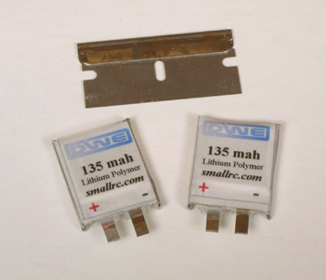
18247 - 2 Lithium Polymer cells from Dynamic Web Enterprises weigh just 6.2 grams total. The razor blade is for size reference.
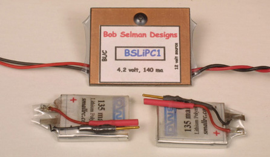
18255 - 2 Lithium Polymer cells with Bob Selman's charger. The Selman charger will recharge just one cell at a time, hence the individual connectors.
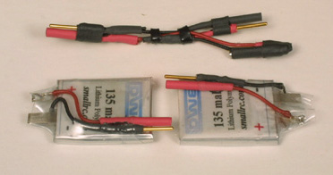
18253 - I made up a simple harness to connect the Li Poly cells in series.
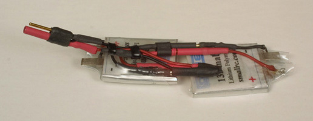
18250 - I made up a simple harness to connect the Li Poly cells in series.
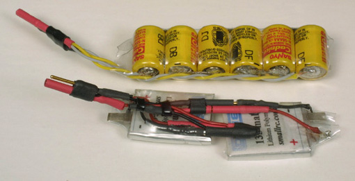
18251 - The Li Poly cells are shown with the 6x50mAh nicad pack for size reference. At less than half the weight, and 3 times the flight duration of nicads, the Li Poly's are a perfect match for the Kitten. The extra weight of Nicads does help smooth out rougher air, and they are less delicate in operation. Both types work well.
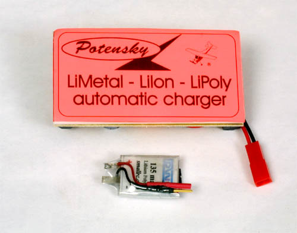
18553 - The Potensky charger shown here, available from Wild R/C, will charge multi cell Li Poly packs. If I had this charger while initially testing the Kitten, I could have removed about 2 more grams of wiring.
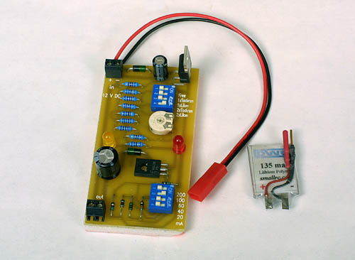
18555 - The Potensky charger available from Wild R/C has two sets of switches to match the charger to the battery being charged.
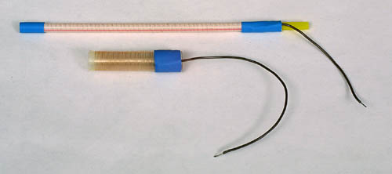
18557 - These two coiled antennas from E Cubed R/C are perfect matches for models like the Kitten. Trailing a long antenna really spoils the ilusion of a nice scale model in the air. The longer is 4" in length.
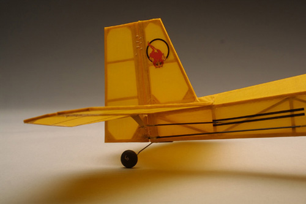
18061 - The balsa tailwheel is non steering. The carbon fiber pushrods are attached to the 1/64" ply control horns with .020 music wire z-bends.
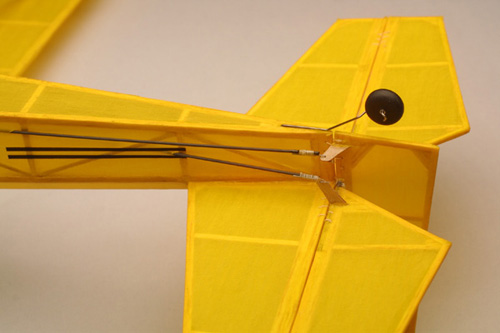
18063 - The balsa tailwheel is non steering. The carbon fiber pushrods are attached to the 1/64" ply control horns with .020 music wire z-bends.
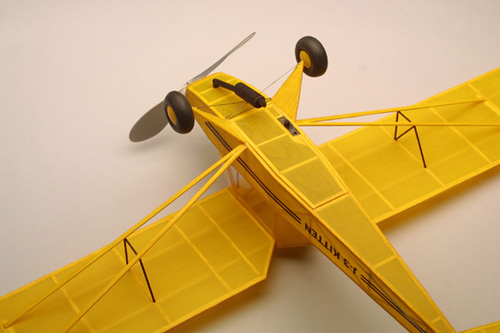
18058 - A large belly hatch provides immediate access to the radio and battery.
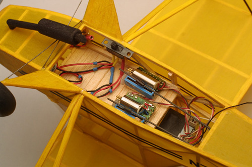
18064 - With the hatch opened, you can clearly see the 1/16" balsa tray for the radio and battery. The Skyhooks and Rigging Hybrid rx is tucked in behind the cockpit at the right.
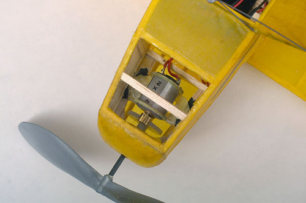
18263 - The 5:1 geared N-20 6volt motor fits perfectly in the nose of the Kitten. A few dabs of IC-2000 from Bob Smith Industries hold it in place. The cross member was added after installing the motor to support the exhaust pipe detail.
|